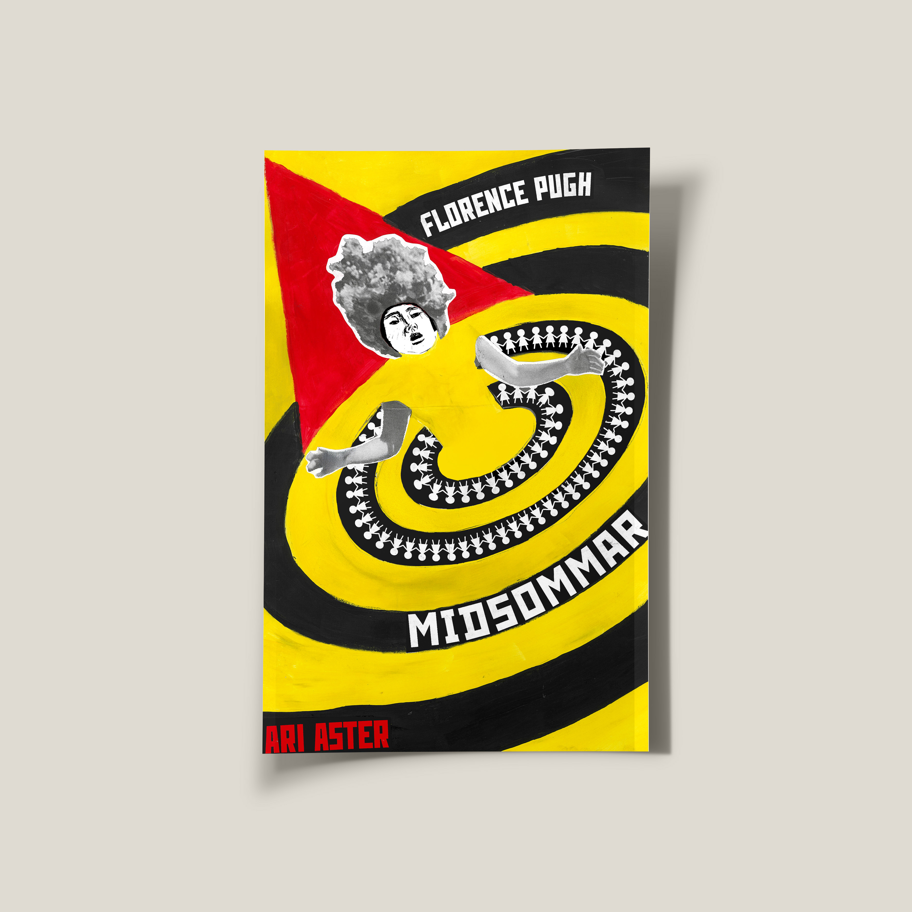
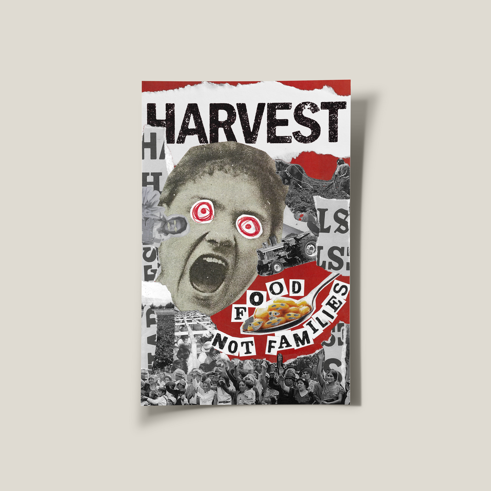
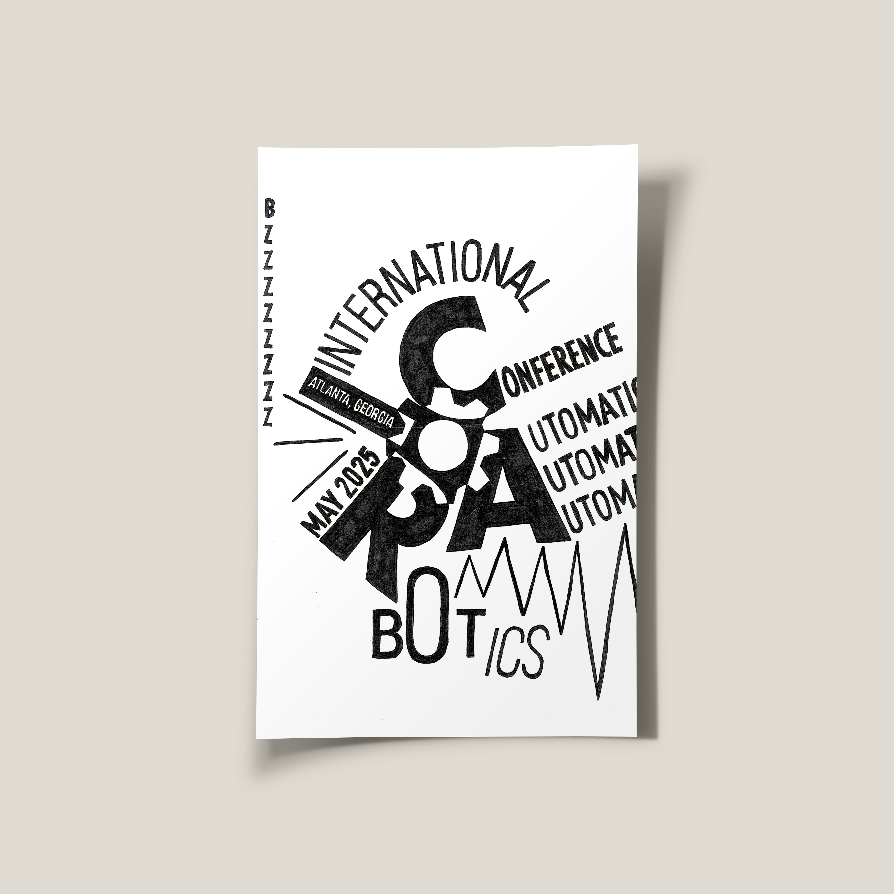
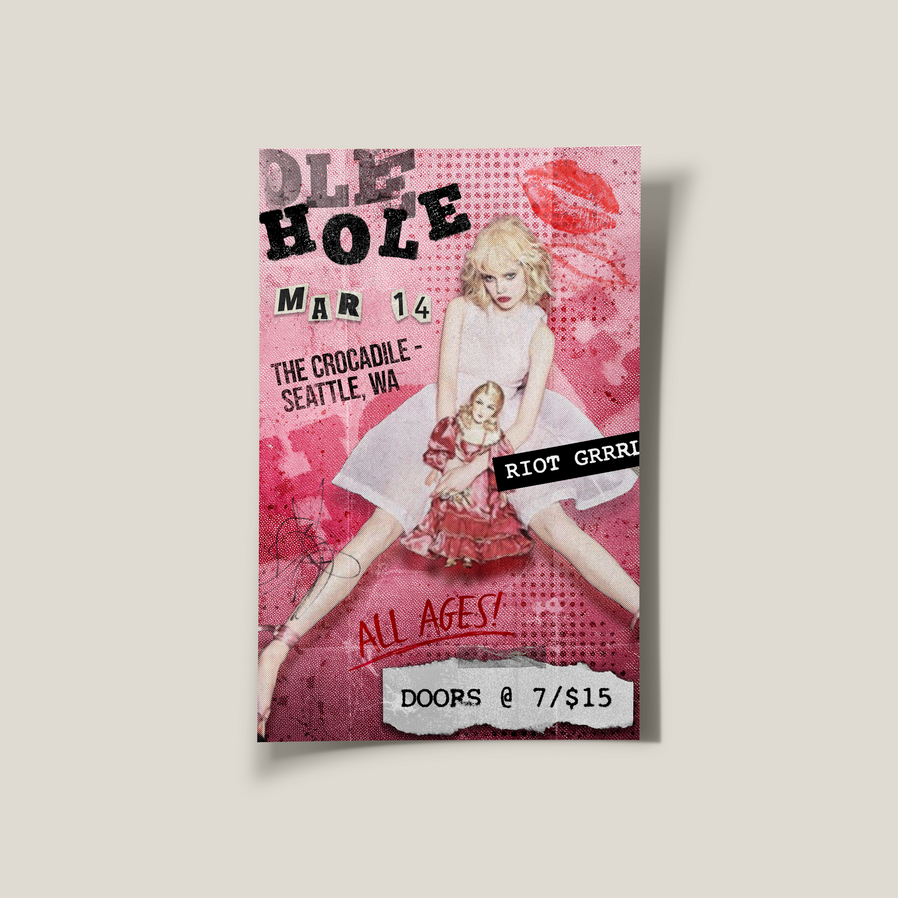
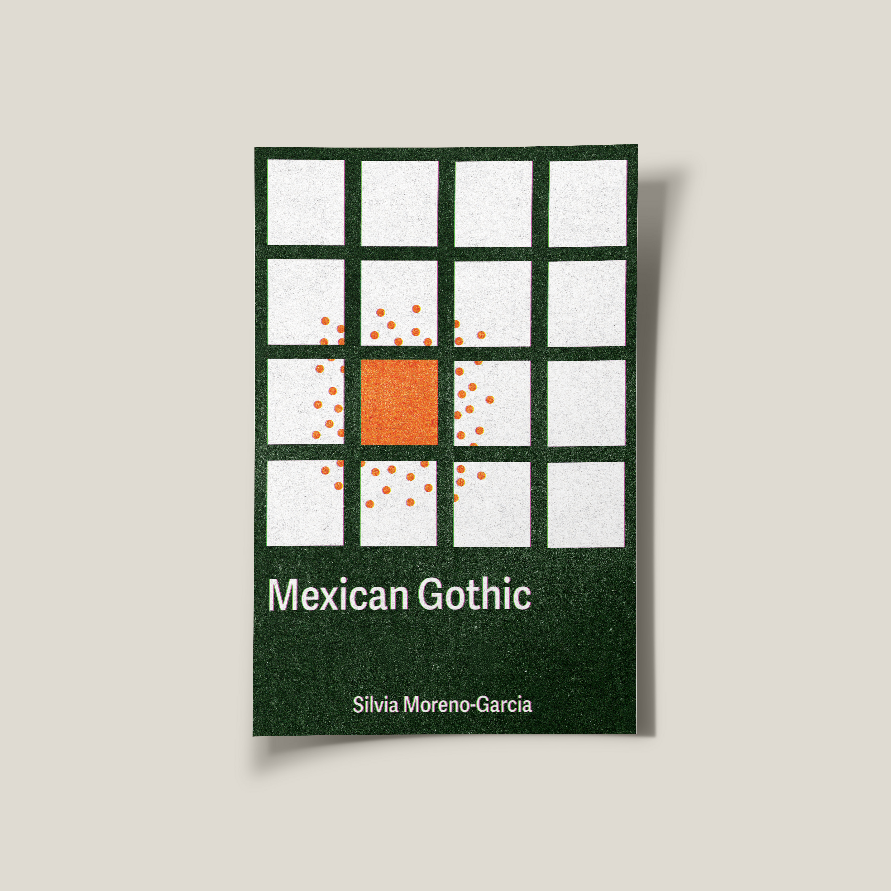
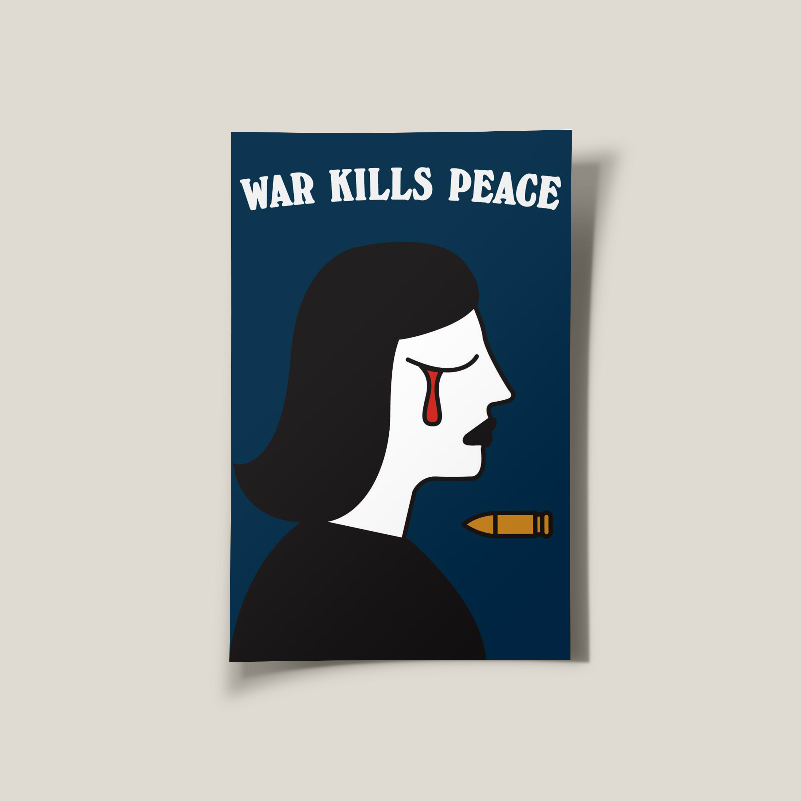
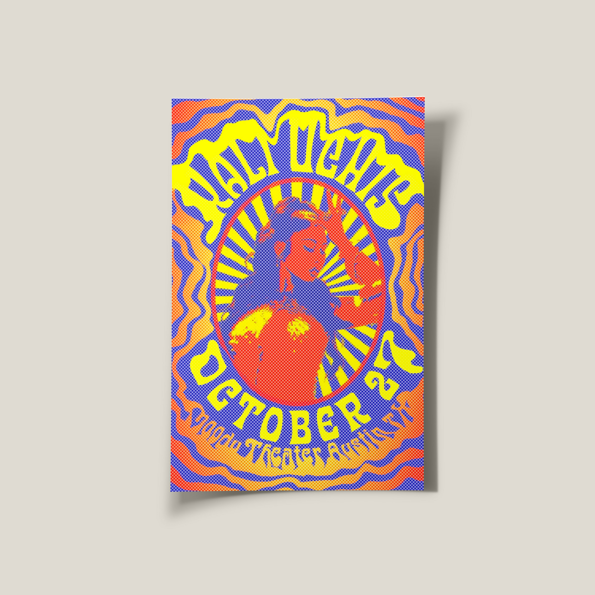
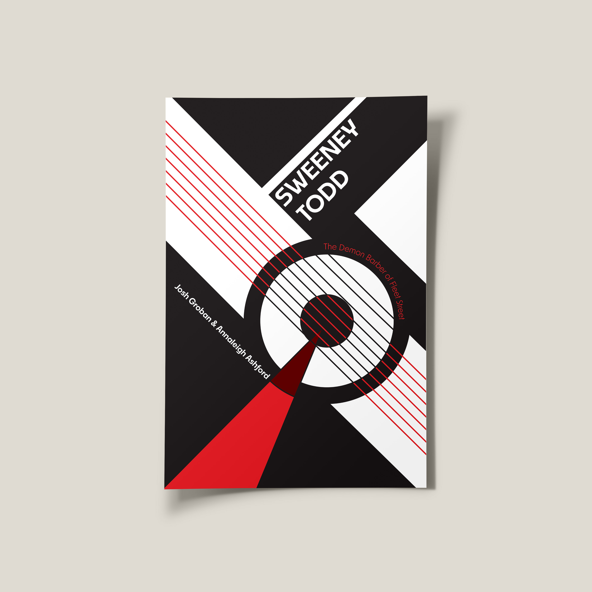
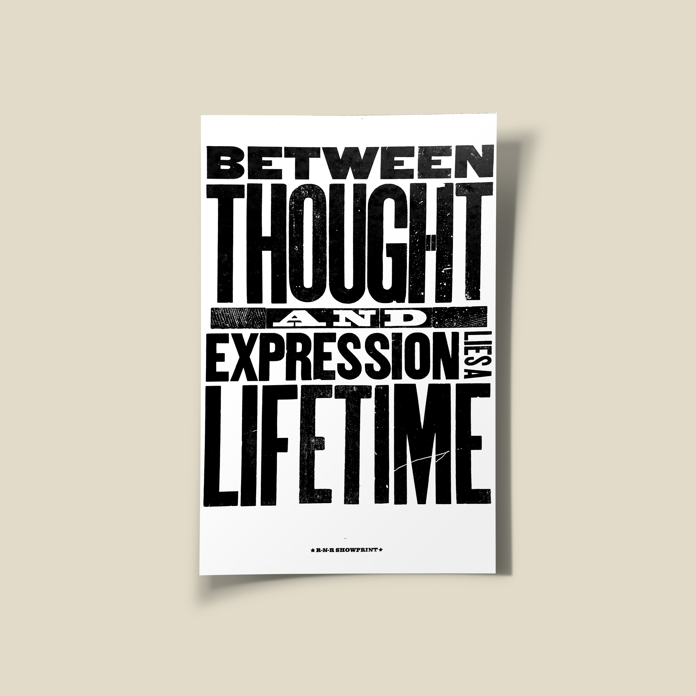

Historical Poster Series
Reframing History Through Contemporary Design
Concept
This poster series explores historical events through a contemporary visual language. Instead of treating history as distant or fixed, the work tries to collapse time and pull those narratives into the present with urgency and emotional weight.
Each poster focuses on a specific theme, tension, or cultural moment and translates it into symbolic imagery and typographic force. The intention is not to document history literally, but to communicate its psychological impact, how these events still feel in the body and in culture.
Design Approach
The system is built around controlled chaos. Structured composition and typographic hierarchy are used as anchors, then disrupted through fragmentation, overlays, and visual interference. The language is influenced by protest graphics, editorial design, and experimental poster culture.
Type functions as both information and image. Scale shifts, layering, interruption, and broken grid moments mirror instability and conflict within each subject. A limited but high-impact color palette creates cohesion across the series, while grain, halftone, and collage texture introduce an archival quality with a contemporary edge.
Result
The final series reframes historical communication as narrative experience. Rather than offering neutral information, the posters invite reflection, discomfort, and curiosity by prioritizing mood, symbolism, and visual tension.
This project demonstrates my ability to translate complex themes into clear visual systems while keeping conceptual depth at the center. It combines strong typographic execution with emotional storytelling and a recognizable design voice.